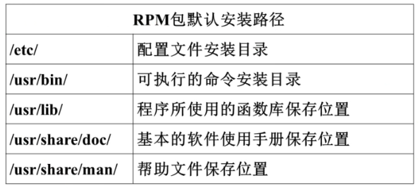

源码包（编程言写的未经编译的代码）
脚本安装包
二进制包（RPM包、系统默认包（经过编译后的））
源码包的优点：
开源，如果有足够的能力，可以修改源代码
可以自由选择所需的功能
软件是编译安装，所以更加适合自己的系统，更加稳定效率也更高
卸载方便
源码包的缺点：
安装过程步骤较多，尤其安装较大的软件集合时（如LAMP环境搭建），容易出现拼写错误
编译过程时间较长，安装比二进制安装时间长
因为是编译安装，安装过程中一旦报错新手很难解决
二进制包
分类
DPKG包：是由Debian Linux所开发出来的包管理机制，通过DPKG包，Debian Linux就可以进行软件包管理。主要应用在Debian和Ubuntu中。
RPM包：是由RedHat公司所开发的包管理系统。功能强大，安装、升级、查询和卸载都非常方便。目前很多Linux都在使用这种包管理方式，包括Fedora、CentOS、SuSe等。
特点
RPM包的优点：
包管理系统简单，只通过几个命令就可以实现包的安装、升级、查询和卸载
安装速度比源码包安装快得多
RPM包的缺点：
经过编译，不再可以看到源代码
功能不如源码包灵活
依赖性。有时安装软件包a时需要选装b和c，而安装b时需要安装d和e。这时需要先安装d和e，再安装b和c，最后才能安装a包。
RPM包依赖性
树形依赖：a → b → c
环形依赖：a → b → c → a(将软件包a、b、c用一条命令装即可)
模块依赖：模块依赖查询网站：www.rpmfind.net
RPM包管理-rpm包命令管理
RPM包安装位置，是安装在默认位置

RPM包安装的服务可以用系统服务管理命令（service）来管理，例如RPM包安装的apache的启动方法是：
/etc/rc.d/init.d/httpd start或service httpd start
RPM包命名规则
httpd-2.2.15-15.e16.centos.1.i686.rpm
httpd 软件包名
2.2.15 软件版本
15 软件发布次数
e16.centos 适合的Linux平台
i686 适合的硬件平台
rpm rpm包扩展名
安装升级与卸载
包全名与包名
包全名：操作的包是没有安装的软件包时用包全名。而且要注意路径。
包名：操作已安装的软件包时，使用包名。是搜索/var/lib/rpm中的数据
RPM安装
rpm -ivh 包全名
选项：
-i(install) 安装
-v(verbose) 显示详细信息
-h(hash) 显示进度
--nodeps 不检测依赖性安装。软件安装时会检测依赖性，确定所需底层软件是否安装。如果没有安装则会报错。如果不管依赖性，强行安装，可以使用这个选项。注意：不检测依赖性安装的软件基本是不能使用的，所以不建议这样做。
--replacefiles 替换文件安装。如果安装软件包，可是包中部分文件已经存在，那么正常安装时候，会报错“某个文件已经存在”从而导致软件无法安装，使用这个选项可以忽视这个报错，而覆盖安装
--replacepkgs 替换软件包安装。如果软件包已经安装，此选项可以把软件包重新安装一遍
--force 强制安装。不管是否已经安装，都重新安装。就是--replacefiles和--replacepkgs的综合
--test 测试安装。不会实际安装，只是检测一下依赖性。
--prefix 指定安装路径。为安装软件指定安装路径，而不使用默认安装路径。注意：如果指定了安装路径，软件没有安装到系统默认的路径中的话，系统会找不到这些安装的软件，需要手工进行配置才能被系统识别。所以rpm包我们一般都采用默认路径安装。
RPM包升级
rpm -Uvh 包全名
选项：
-U（upgrade） 升级安装，如果没有安装过，系统直接安装。如果安装的版本过旧，则升级到新的版本。
rpm -Fvh 包全名
-F（freshen） 升级安装，如果没有安装过，则不会安装。必须安装有较旧的版本，才能升级。
RPM包卸载
rpm -e 包名
选项：
-e(erase) 卸载
--nodeps 不检查依赖性
[root@localhost～]#rpm -q 包名 #查询包是否安装
选项：
-q 查询（query）
[root@localhost～]#rpm -qa #查询所有已安装的RPM包
选项：
-a 所有（all）
[root@localhost～]# rpm -qi 包名 #查询软件包的详细信息
选项：
-i 查询软件信息（information）
-p 查询未安装包信息（package）
[root@localhost～]# rpm -qip 包全名 #查询没有安装包的信息
[root@localhost～]# rpm -ql 包名 #查询包中文件的安装位置
选项：
-l 列表（list）
-p 查询未安装包信息（package）
[root@localhost～]# rpm -qlp 包全名 #查询未安装包中文件的安装位置
[root@localhost～]# rpm -qf 系统文件名 #查询系统文件属于哪个包
选项：
-f 查询系统文件属于哪个软件包（file）
[root@localhost～]#rpm -qR 包名 #查询软件包的依赖性
选项：
-R 查询软件包的依赖性（requires）
-p 查询未安装包的信息（package）
rpm包校验
[root@localhost～]#rpm -V 已安装的包名
选项：
-V 校验指定RPM包中的文件（verify）
[root@localhost～]#rpm -Vf 系统文件名
选项：
-Vf 校验某个系统文件是否被修改
验证内容中的8个信息的具体内容如下：
S 文件大小是否改变
M 文件类型或文件的权限（rwx）是否改变
5 文件MD5校验和是否改变（可以看成文件内容是否改变）
D 设备的中，从代码是否改变
L 文件路径是否改变
U 文件的属主（所有者）是否改变
G 文件的属组是否改变
T 文件的修改时间是否改变
文件类型
c 配置文件（config file）
d 普通文档（documentation）
g “鬼”文件（ghost file），很少见，就是该文件不应该被这个RPM包包含
l 授权文件（license file）
r 描述文件（read me）
数字证书
上面的校验方法只能对已经安装的RPM包中的文件进行校验，但是如果RPM包本身就被动过手脚，那么校验就不能解决问题了。此时就必须使用数字证书验证了。
数字证书有如下特点：
首先必须找到原厂的公钥文件，然后进行安装
再安装RPM包时，会去提取RPM包中的证书信息，然后和本机安装的原厂证书进验证
如果验证通过，则允许安装；如果验证不通过，则不允许安装并警告
数字证书位于CentOS6.3的第一张光盘中，当然它默认也会放在系统中。
/mnt/cdrom/RPM-GPG-KEY-CentOS-6 #光盘中的数字证书位置
/etc/pki/rpm-pgp/RPM-GPG-KEY-CentOS-6 #系统中的数字证书保存位置
数字证书导入
rpm --import /etc/pki/rmm-gpg/RPM-GPG-KEY-CentOS-6
--import 导入数字证书
RPM包文件提取
cpio命令主要有三种基本模式：“-o”模式指的是copy-out模式，就是把数据备份到文件库中；"-i"模式指的是copy-in模式，就是把数据从文件库中恢复；“-p”模式指的是复制模式，就是不把数据备份到cpio库中，而是直接复制为其他文件。命令如下：
[root@localhost～]#cpio -o[vcB] > [文件|设备] #备份
选项：
-o: copy-out模式，备份
-v: 显示备份过程
-c: 使用较新的portable format存储方式
-B: 设定输入输出块为5120bytes，而不是512bytes
[root@localhost～]#cpio -i[vcdu] < [文件|设备] #还原
选项：
-i: copy-in模式，还原
-v: 显示还原过程
-c: 使用较新的portable format存储方式
-d: 还原时自动新建目录
-u: 自动使用较新的文件覆盖较旧的文件
注意：cpio自己不能指定源文件，只能接收管道符的数据作为源。
[root@localhost～]#cpio -p 目标目录
例：
[root@localhost～]#find /boot/ -print | cpio -p /tmp/test #备份/boot/目录到/tmp/test/目录中
使用cpio备份数据的方法，命令如下：
[root@localhost～]#find /etc/ -print | cpio -ocvB > /root/etc.cpio
#利用find指定要备份/etc/目录，使用>导出到etc.cpio文件
使用cpio恢复cpio的备份数据，命令如下:
[root@localhost～]#cpio -idvcu < /root/etc.cpio
#还原etc的备份，但是如果大家查看下当前目录/root，会发现没有生成etc目录。这是因为备份/etc/目录使用的是绝对路径，所以恢复的数据直接恢复到了/etc系统目录中，而没有生成在/root/etc中。
在CentOS5.x的版本中，是可以利用上面的命令备份与恢复指定的文件。但是到CentOS6.x当中，需要更加谨慎。如果备份时使用绝对路径，则恢复的数据会直接到绝对路径指定的路径中，如果需要把数据恢复到当前目录中，则需要使用相对路径，例如：
备份：
[root@localhost～]#cd /etc
[root@localhost etc]#find . -print | cpio -ocvB > /root/etc.cpio
#利用find指定要备份/etc/目录，使用>导出到etc.cpio文件
恢复：
[root@localhost～]#cd /root
[root@localhost～]#mkdir etc_test
[root@localhost～]#cd etc_test
[root@localhost etc_test]#cpio -idvcu < /root/etc.cpio
#还原/etc/目录的数据，因为备份时使用的是相对路径，则会还原到/root/etc_test/目录下
cpio命令的-p复制模式，命令如下：
[root@localhost～]#find /root/ -print | cpio -p /tmp/test/ #备份/boot/目录到/tmp/test/目录中
提取RPM包中文件
[root@localhost～]#rpm2cpio 包全名 | cpio -idv .文件绝对路径
rpm2cpio #将rpm包转换成cpio格式命令
cpio #是一个标准工具，它用于创建软件档案文件和从档案文件中提取文件
范例：以误删/bin/ls为例
[root@localhost～]# rpm -qf /bin/ls #查询ls命令属于哪个软件包
[root@localhost～]# rpm2pico /mnt/cdrom/Packages/coreutils-8.4-19.e16.rpm \
| cpio -idv ./bin/ls #提取RPM包中ls命令到当前目录的/bin/ls下
[root@localhost～]# cp /root/bin/ls /bin/ #把ls命令复制回/bin/目录，修复文件丢失
RPM包管理-yum在线管理
网络yum源
[root@localhost～]# vi /etc/yum.repos.d/CentOS-Base.repo
[base] 容器名称，一定要放在[]中
name 容器说明，可以自己随便写
mirrorlist 镜像站点，这个可以注释掉
baseurl 我们的yum源服务器的地址。默认是CenteOS官方的yum源服务器，是可以使用的，
如果你觉得慢可以改成你喜欢的yum源地址
enabled 此容器是否生效，如果不写或写成enable=1都是生效，写成enable=0就是不生效
gpgcheck 如果是1是指RPM的数字证书生效，如果是0则不生效
gpgkey 数字证书的公钥文件保存位置。不用修改
yum命令
[root@localhost～]# yum list #查询所有可用软件包列表
[root@localhost～]# yum search 关键字 #搜索服务器上所有和关键字相关的包
安装
[root@localhost～]# yum -y install 包名
选项：
install 安装
-y 自动回答yes
升级
[root@localhost～]# yum -y update 包名 #慎用
选项：
update 升级
-y 自动回答yes
卸载
[root@localhost～]# yum -y remove 包名
选项：
remove 卸载
-y 自动回答yes
yum软件组管理命令
[root@localhost～]# yum grouplist #列出所有可用的软件组列表
[root@localhost～]#yum groupinfo 软件组名 #列出软件组中包含的软件
[root@localhost～]# yum groupinstall 软件组名 #安装指定软件组，组名可以由grouplist查询出来
[root@localhost～]# yum groupremove 软件组名 #卸载指定软件组
源码包安装过程
源码包安装位置
安装在指定位置当中，一般是/usr/local/软件名/
源码包安装的服务不能被服务管理命令管理，因为没有安装到默认路径中，所以只能用绝对路径进行服务管理
如：/usr/local/apache2/bin/apachectl start
安装注意事项：
源代码保存位置：/usr/local/src/
软件安装位置：/usr/local/
如何确定安装过程报错：
安装过程停止
并出现error、warning或no的提示
安装过程
下载源码包→解压缩源码包→进入解压缩目录
./configure 软件配置与检查
定义需要的功能选项
检测系统环境是否符合安装要求
把定义好的功能选项和检测系统环境的信息都写入Makefile文件，用于后续的编辑
[root@localhost～]# ./configure --prefix=/usr/local/apache2 #检查配置，并指定安装目录
[root@localhost～]# make #编译
[root@localhost～]# make install #编译安装
[root@localhost～]# /usr/local/apache2/bin/apachectl start
源码包卸载
不需要卸载命令，直接删除安装目录即可。不会遗留任何垃圾文件。
打入补丁
1）补丁生成
[root@localhost～]#diff 选项 old new #比较old和new文件的不同
选项：
-a 将任何文档当做文本文档处理
-b 忽略空格造成的不同
-B 忽略空白行造成的不同
-I 忽略大小写造成的不同
-N 当比较两个目录时，如果某个文件只在一个目录中，则另一个目录中视作空文件
-r 当比较目录时，递归比较子目录
-u 使用同一的输出格式
举例：
[root@localhost～]#mkdir test
[root@localhost～]#cd test
[root@localhost test]#vi old.txt
our
school
is
lampbrother #文件old.txt，为了一会输出便于比较，每行分开
[root@localhost test]#vi new.txt
our
school
is
lampbrother
in
beijing
比较下面一个文件的不同，并生成补丁文件“txt.patch”，命令如下：
[root@localhost test]#diff -Naur /root/old.txt /root/test/new.txt > txt.patch
#比较两个文件的不同，同时生成txt.patch补丁文件
[root@localhost test]#more txt.patch #查看一下这个文件
--- /root/test/old.txt 2012-11-23 05:51:14. 347954373 +0800 #前一个文件
+++ /root/test/new.txt 2012-11-23 05:50:05. 772988210 +0800 #后一个文件
@@ -2,3 +2,5@@
school
is
lampbrother
+in
+beijing #后面一个文件比前面一个文件多两行（+表示）
2）打入补丁
[root@localhost test]#patch -pn < 补丁文件 #按照补丁文件进行更新
选项：
-pn n为数字。代表按照补丁文件中的路径，指定更新文件的位置。
“-pn”因为补丁文件是要打入旧文件的，但是当前所在的目录和补丁文件中的记录的目录是不一定匹配的，所以就需要“-pn”来同步两个目录。
比如当前是在“/root/test/”目录中（我要打补丁的旧文件就在当前目录下），补丁文件中记录的文件目录为“/root/test/old.txt”，这时如果写入“-p1”（在补丁文件目录中取消一级目录）那么补丁文件就会打入“/root/test/root/test/old.txt”文件中，这显然是不对的。那如果写入的是“-p2”（在补丁目录中取消二级目录）那么补丁文件打入的就是“/root/test/test/old.txt”，这显然也不对。如果写入的是“-p3”（在补丁文件目录中取消三级目录）那么补丁文件就是打入的“/root/test/old.txt”,我们的old.txt文件就在这个目录下所以就应该是“-p3”。
那么更新一下“old.txt”文件，命令如下：
[root@localhost test]#patch -p3 < txt.patch #给old.txt文件打补丁
脚本安装包
脚本安装包不是独立的软件安装类型，常见安装的是源码包。
是人为把安装过程写成了自动安装的脚本。只要执行脚本，定义简单的参数，就可以完成安装。
非常类似于windows下软件的安装方式。
安装 ./setup.sh
函数库管理
1、函数库分类
静态函数库：函数库文件一般以“*.a”扩展名结尾。这种函数库在被程序调用时会被直接整合到程序当中
优点：程序执行时，不需要再调用外部数据，可以直接执行。
缺点：因为所有内容都整合到程序中，所以编译生成的文件会比较大，升级比较困难，需要把整个程序都重新编译
动态函数库：函数库文件通常以“*.so”扩展名结尾。这种函数库被程序调用时，并没有直接整合到程序当中，当程序需要用函数库的功能时，再去读取函数库。在程序中只保存了函数库的指向。

2、函数库管理
1）安装函数库
[root@localhost test]#ldd -v 可执行文件名（绝对路径）
选项：
-v 显示详细版本信息
例：
[root@localhost ～]#ldd /bin/ls #查询ls命令调用的函数库
如果新安装一个函数库，如何让它被系统识别？其实软件如果是正常安装，是不需要手工调整函数库的，它们都会被正常安装。但是万一没有安装正确，需要手工安装，只要把函数库放入指定的位置，一般都放在“/usr/lib”或“/lib”中，然后把函数库所在目录写入“/etc/ld.so.conf”文件。注意是把函数库所在目录名写入，而不是函数库的文件名。比如：
[root@localhost ～]# cp *.so /usr/lib/ #把函数库拷贝入/usr/lib目录
[root@localhost ～]#vi /etc/ld.so.conf #修改函数库配置文件
include ld.so.conf.d/*.conf
/usr/lib #写入函数库所在目录（其实/usr/lib目录默认已经被识别）
然后使用ldconfig命令重新读取/etc/ld.so.conf文件，把新函数库读入缓存即可，命令如下：
[root@localhost ～]# ldconfig #从/etc/ld.so.conf中把函数库读入缓存
[root@localhost ～]# ldconfig -p #列出系统缓存中所有识别的函数库